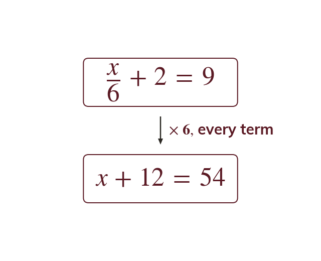

Clearing a fraction
To clear a fraction, multiply EVERY term on both sides by the denominator. Not just the fraction: the equation must stay balanced.
an equation containing a fraction is cleared by multiplying every single term on both sides by the denominator - not just the fractional term, because the equation must stay balanced.